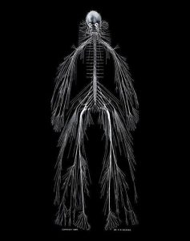
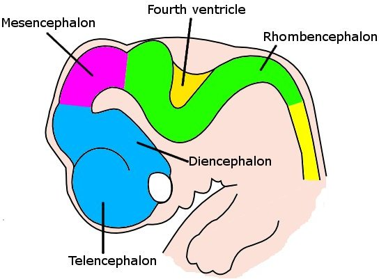
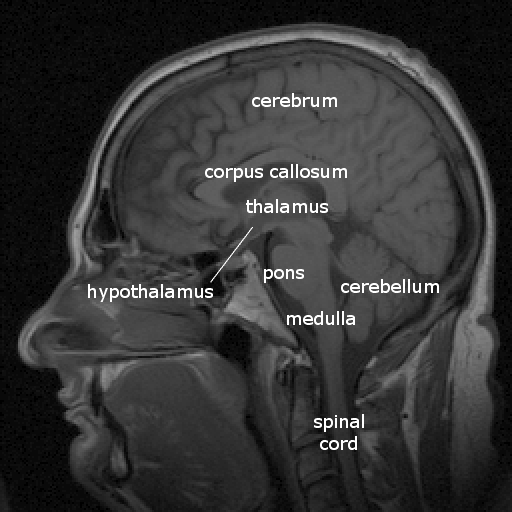
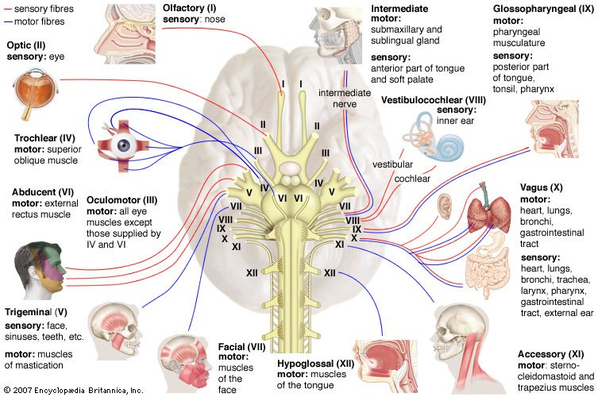
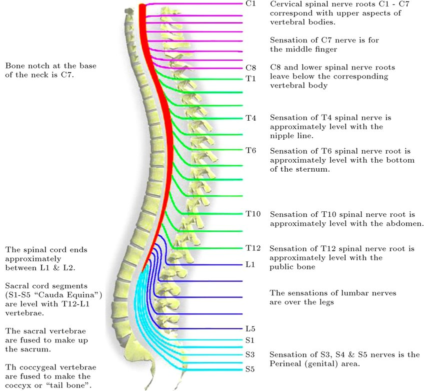
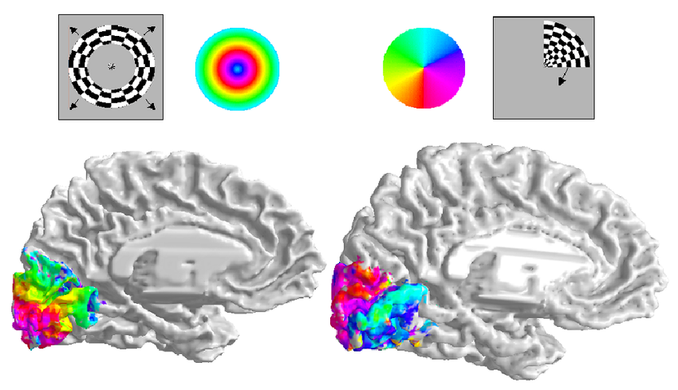

Neuroanatomy
PSY 511.003 Spr 2025
Prelude
ctdalilah (2006)
Kids Learning Tube (2015)
Announcements
- Exercise 02 due next Wednesday, January 29, 2025.
Today’s topics
- Neuroanatomy
- Brief overview
- In-class lab
- Exercise 02
Neuroanatomy
Why study?
- Master basic vocabulary for reading literature
Information processing perspective
- Inputs from
- World
- Body
- Brain1
- Outputs to
- World
- Body
- Brain
- What computations occur where
Functional anatomy perspective
- Located where
- Connected to
- Involved in
Brain anatomy through dance
Directional terms
- Anterior/Posterior
- Medial/Lateral
- Superior/Inferior
- Dorsal/Ventral
- Rostral/Caudal
Central vs. Peripheral Nervous System

Organization of the CNS
| Major division | Ventricular Landmark | Embryonic Division | Structure |
|---|---|---|---|
| Forebrain | Lateral | Telencephalon | Cerebral cortex |
| Basal ganglia | |||
| Hippocampus, amygdala |
| Major division | Ventricular Landmark | Embryonic Division | Structure |
|---|---|---|---|
| Third | Diencephalon | Thalamus | |
| Hypothalamus |
| Major division | Ventricular Landmark | Embryonic Division | Structure |
|---|---|---|---|
| Midbrain | Cerebral Aqueduct | Mesencephalon | Tectum, tegmentum |
| Major division | Ventricular Landmark | Embryonic Division | Structure |
|---|---|---|---|
| Hindbrain | 4th | Metencephalon | Cerebellum, pons |
| – | Mylencephalon | Medulla oblongata |
Forebrain, midbrain, hindbrain terminology derives from embryonic stages in CNS development.

Cerebrum
- (Cerebral) cortex
- Subcortical (below the cortex) structures

(Cerebral) cortex
- Lobes, marked by sulci/fissures, adjacency to bones of skull
- Functional areas marked by gyri & sulci
- Brodmann Areas
- Microstructural (cellular composition) features
- Most lobes host primary sensory or motor area
- Frontal: Motor cortex
- Temporal: Auditory cortex
- Parietal: Somatosensory cortex
- Occipital: Visual cortex
- Insula: Gustatory
Input/output
- Via cranial nerves (in CNS)
- Via spinal nerves (in PNS)


Multiple hierarchies

Maps
- Sensory & motor systems often use maps



- Geometric issues central for perceptual/motor behavior
- Do other systems “map” function to structure?
Neuroanatomy lab
Overview
- 3 groups
- Rotate among stations every ~25 min
- Identify as many structures as possible
Wrap-up
Main points
- Directional terms
- What is it
- Where is it
- Relative to other things
- CNS/PNS
- Forebrain/midbrain/hindbrain
- Cerebral cortex and its subparts
- Grey matter vs. white matter
Next time…
Resources
References
ctdalilah. (2006, October). Pinky and the brain-brainstem. Youtube. Retrieved from https://www.youtube.com/watch?v=snO68aJTOpM
Kids Learning Tube. (2015, October). Human body for Kids/Brain Song/Human body systems. Youtube. Retrieved from https://www.youtube.com/watch?v=Qw8E9WnZTQk
McNaughton, A. (2018, November 20). Dissecting harriet cole: Uncovering women’s history in the archives. Retrieved January 8, 2025, from https://drexel.edu/legacy-center/blog/overview/2018/november/dissecting-harriet-cole-uncovering-womens-history-in-the-archives/
Saenz, M., & Langers, D. R. M. (2014). Tonotopic mapping of human auditory cortex. Hearing Research, 307, 42–52. https://doi.org/10.1016/j.heares.2013.07.016
Swanson, L. W. (2005). Anatomy of the soul as reflected in the cerebral hemispheres: Neural circuits underlying voluntary control of basic motivated behaviors. Journal of Comparative Neurology, 493(1), 122–131. https://doi.org/10.1002/cne.20733
Footnotes
shorthand for nervous system↩︎